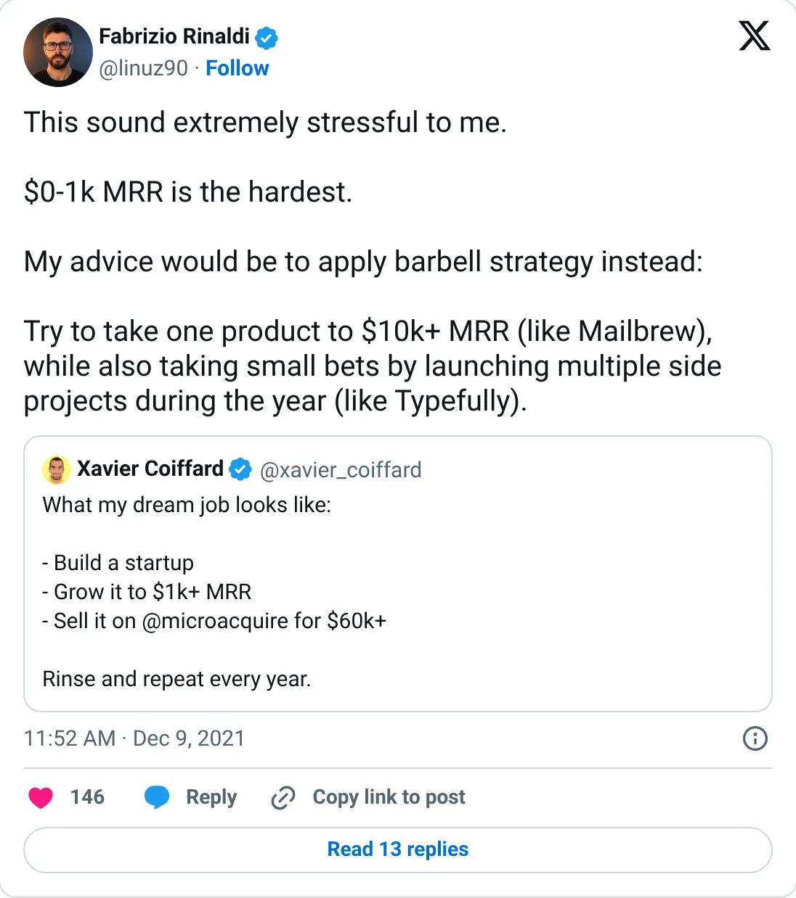
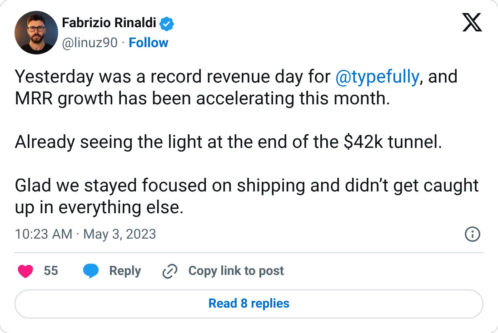
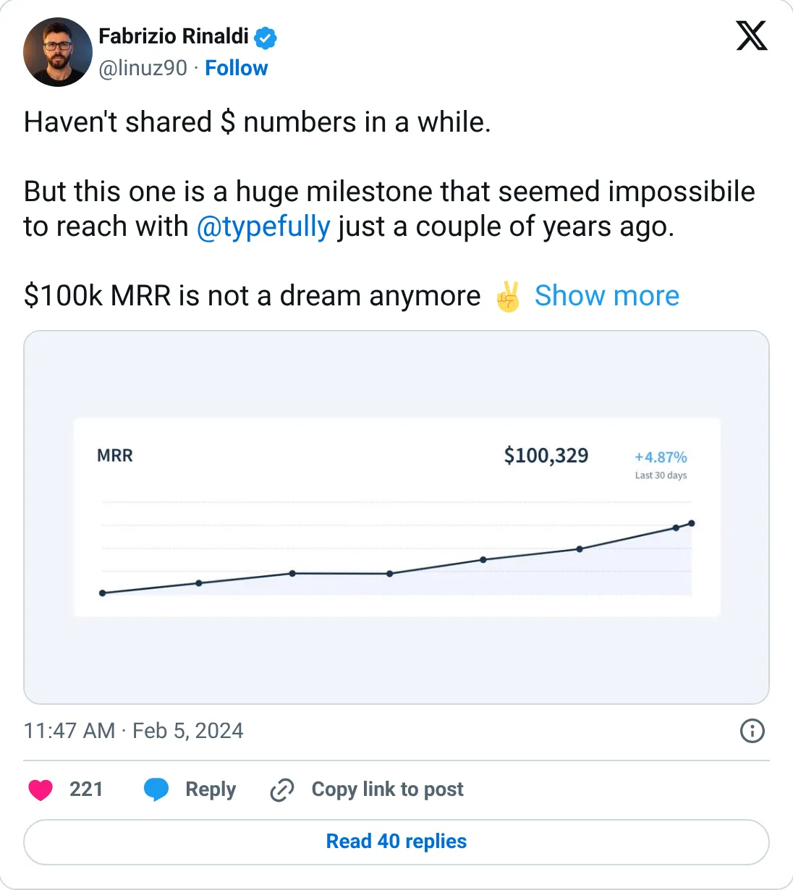

Not a pick
Typefully
A real-looking company with a headline you should not plan against.
$100,329 MRR (Feb 2024)
Should you build this
The company may be real. The figure on the card is a peak, a stale year, a cash month, or an average. Typefully's figure is oddly precise for a lie: $100,329 MRR, up 4.87% over 30 days, from a chart shared on February 5, 2024. An earlier post had them approaching $42K MRR. Precision like that usually means someone cropped a billing page. It does not mean the crop is still true. Thirty-two months later, this report has nothing newer. Rank it as a 2024 fact, not as a 2026 run-rate.
Cited from the captured posts, shown below: the earliest captured post (Dec 9, 2021); the milestone (May 3, 2023) is the source for “Record revenue day, approaching $42K MRR”; the latest milestone (Feb 5, 2024) is the source for “MRR $100,329 (+4.87%/30d) in a shared chart”.
Posts this is based on

Open on X

Record revenue day, approaching $42K MRR
Open on X

MRR $100,329 (+4.87%/30d) in a shared chart
Open on X
What the product is
Writing and scheduling app for X, LinkedIn, Threads and Bluesky, with AI help and analytics.
⚠ Older: the latest MRR figure we found is from Feb 2024.